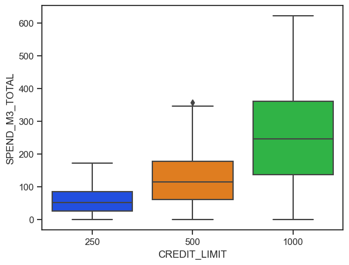
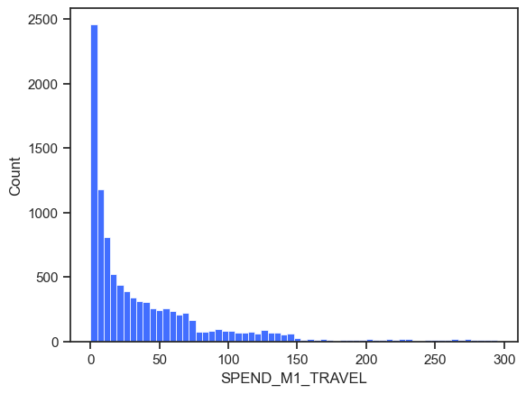
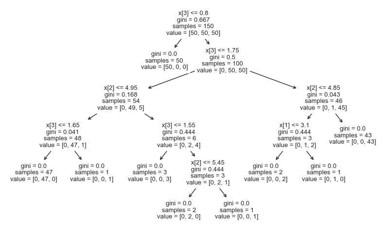

import pandas as pd
import seaborn as sns
from sklearn import linear_model
from sklearn.model_selection import train_test_split
from sklearn.preprocessing import OneHotEncoder
from sklearn.metrics import mean_absolute_error, mean_squared_error, r2_score
from scipy import stats
import matplotlib.pyplot as pltDealing with null values
sns.set_theme(style='ticks', palette='bright')df = pd.read_excel("Capital One - Data Set (STEP UP).xlsx")df.head()| CUSTOMER_ID | REGION | AGE | PARENT | OCCUPATION | MOBILE_APP_USER | CARD_COLOUR | CREDIT_LIMIT | SPEND_M1_TRAVEL | SPEND_M1_GROCERY | SPEND_M1_OTHER | SPEND_M2_TRAVEL | SPEND_M2_GROCERY | SPEND_M2_OTHER | SPEND_M3_TOTAL | |
|---|---|---|---|---|---|---|---|---|---|---|---|---|---|---|---|
| 0 | 0 | England | 48.0 | 0 | Employed | 1.0 | Blue | 250 | 5.71 | 16.60 | 4.95 | 8.64 | 13.04 | 7.49 | 30.51 |
| 1 | 1 | Northern Ireland | 42.0 | 0 | Employed | 1.0 | Red | 500 | 38.27 | 43.51 | 79.22 | 90.10 | 0.00 | 78.40 | 20.41 |
| 2 | 2 | England | 28.0 | 1 | Employed | 1.0 | Black | 250 | 32.90 | 59.49 | 8.04 | 36.07 | 56.74 | 18.74 | 109.33 |
| 3 | 3 | England | 31.0 | 0 | Unemployed | 1.0 | Black | 500 | 32.60 | 47.55 | 23.87 | 14.45 | 21.08 | 10.58 | 50.34 |
| 4 | 4 | England | 47.0 | 1 | Student | 1.0 | Black | 1000 | 262.42 | 0.00 | 26.70 | 229.87 | 0.00 | 183.74 | 184.99 |
df.describe()| CUSTOMER_ID | AGE | PARENT | MOBILE_APP_USER | CREDIT_LIMIT | SPEND_M1_TRAVEL | SPEND_M1_GROCERY | SPEND_M1_OTHER | SPEND_M2_TRAVEL | SPEND_M2_GROCERY | SPEND_M2_OTHER | SPEND_M3_TOTAL | |
|---|---|---|---|---|---|---|---|---|---|---|---|---|
| count | 10000.00000 | 9960.000000 | 10000.0000 | 9958.000000 | 10000.000000 | 10000.000000 | 10000.000000 | 10000.000000 | 10000.000000 | 10000.000000 | 10000.000000 | 10000.000000 |
| mean | 4999.50000 | 45.919076 | 0.2909 | 0.710785 | 459.875000 | 40.954998 | 45.079606 | 32.035493 | 40.633002 | 46.329385 | 31.944725 | 112.088106 |
| std | 2886.89568 | 14.490208 | 0.4542 | 0.453421 | 274.529181 | 54.583038 | 53.651382 | 45.116389 | 50.304390 | 49.894749 | 44.504980 | 105.012250 |
| min | 0.00000 | 18.000000 | 0.0000 | 0.000000 | 250.000000 | 0.000000 | 0.000000 | 0.000000 | 0.000000 | 0.000000 | 0.000000 | 0.000000 |
| 25% | 2499.75000 | 35.000000 | 0.0000 | 0.000000 | 250.000000 | 4.930000 | 12.500000 | 4.717500 | 5.707500 | 15.640000 | 4.757500 | 38.625000 |
| 50% | 4999.50000 | 46.000000 | 0.0000 | 1.000000 | 250.000000 | 19.285000 | 27.245000 | 15.440000 | 22.755000 | 30.435000 | 15.920000 | 81.365000 |
| 75% | 7499.25000 | 56.000000 | 1.0000 | 1.000000 | 500.000000 | 56.457500 | 56.480000 | 40.942500 | 55.582500 | 57.180000 | 41.162500 | 145.135000 |
| max | 9999.00000 | 99.000000 | 1.0000 | 1.000000 | 1000.000000 | 295.100000 | 311.510000 | 396.000000 | 294.890000 | 312.600000 | 396.000000 | 621.310000 |
df.info()<class 'pandas.core.frame.DataFrame'>
RangeIndex: 10000 entries, 0 to 9999
Data columns (total 15 columns):
# Column Non-Null Count Dtype
--- ------ -------------- -----
0 CUSTOMER_ID 10000 non-null int64
1 REGION 9965 non-null object
2 AGE 9960 non-null float64
3 PARENT 10000 non-null int64
4 OCCUPATION 9958 non-null object
5 MOBILE_APP_USER 9958 non-null float64
6 CARD_COLOUR 9960 non-null object
7 CREDIT_LIMIT 10000 non-null int64
8 SPEND_M1_TRAVEL 10000 non-null float64
9 SPEND_M1_GROCERY 10000 non-null float64
10 SPEND_M1_OTHER 10000 non-null float64
11 SPEND_M2_TRAVEL 10000 non-null float64
12 SPEND_M2_GROCERY 10000 non-null float64
13 SPEND_M2_OTHER 10000 non-null float64
14 SPEND_M3_TOTAL 10000 non-null float64
dtypes: float64(9), int64(3), object(3)
memory usage: 1.1+ MBdf.isna().any()CUSTOMER_ID False
REGION True
AGE True
PARENT False
OCCUPATION True
MOBILE_APP_USER True
CARD_COLOUR True
CREDIT_LIMIT False
SPEND_M1_TRAVEL False
SPEND_M1_GROCERY False
SPEND_M1_OTHER False
SPEND_M2_TRAVEL False
SPEND_M2_GROCERY False
SPEND_M2_OTHER False
SPEND_M3_TOTAL False
dtype: booldf.isna().sum()CUSTOMER_ID 0
REGION 35
AGE 40
PARENT 0
OCCUPATION 42
MOBILE_APP_USER 42
CARD_COLOUR 40
CREDIT_LIMIT 0
SPEND_M1_TRAVEL 0
SPEND_M1_GROCERY 0
SPEND_M1_OTHER 0
SPEND_M2_TRAVEL 0
SPEND_M2_GROCERY 0
SPEND_M2_OTHER 0
SPEND_M3_TOTAL 0
dtype: int64df[['REGION', 'OCCUPATION', 'MOBILE_APP_USER', 'CARD_COLOUR']] = df[['REGION', 'OCCUPATION', 'MOBILE_APP_USER', 'CARD_COLOUR']].fillna(method="ffill")df['AGE'] = df['AGE'].fillna(df['AGE'].mean())df.isna().sum()CUSTOMER_ID 0
REGION 0
AGE 0
PARENT 0
OCCUPATION 0
MOBILE_APP_USER 0
CARD_COLOUR 0
CREDIT_LIMIT 0
SPEND_M1_TRAVEL 0
SPEND_M1_GROCERY 0
SPEND_M1_OTHER 0
SPEND_M2_TRAVEL 0
SPEND_M2_GROCERY 0
SPEND_M2_OTHER 0
SPEND_M3_TOTAL 0
dtype: int64df.REGION.value_counts()England 8493
Scotland 777
Wales 445
Northern Ireland 285
Name: REGION, dtype: int64df.OCCUPATION.unique()array(['Employed', 'Unemployed', 'Student', 'Self-employed', 'Retired'],
dtype=object)df.MOBILE_APP_USER.unique()array([1., 0.])df.CARD_COLOUR.unique()array(['Blue', 'Red', 'Black'], dtype=object)df.CREDIT_LIMIT.unique()array([ 250, 500, 1000], dtype=int64)(df.iloc[:, 8:] >= 0).all()SPEND_M1_TRAVEL True
SPEND_M1_GROCERY True
SPEND_M1_OTHER True
SPEND_M2_TRAVEL True
SPEND_M2_GROCERY True
SPEND_M2_OTHER True
SPEND_M3_TOTAL True
dtype: booldf.iloc[:, 8:].mean()SPEND_M1_TRAVEL 40.954998
SPEND_M1_GROCERY 45.079606
SPEND_M1_OTHER 32.035493
SPEND_M2_TRAVEL 40.633002
SPEND_M2_GROCERY 46.329385
SPEND_M2_OTHER 31.944725
SPEND_M3_TOTAL 112.088106
dtype: float64The data is clean. Let’s do an initial inspection.
We are interested to know how ‘SPEND_M3_TOTAL’ can be decribed by the other variables.
sns.countplot(data=df, x="REGION")<Axes: xlabel='REGION', ylabel='count'>sns.boxplot(data=df, x="REGION", y="SPEND_M3_TOTAL")<Axes: xlabel='REGION', ylabel='SPEND_M3_TOTAL'>sns.countplot(data=df, x="PARENT")<Axes: xlabel='PARENT', ylabel='count'>sns.boxplot(data=df, x="PARENT", y="SPEND_M3_TOTAL")<Axes: xlabel='PARENT', ylabel='SPEND_M3_TOTAL'>sns.countplot(data=df, x="OCCUPATION")<Axes: xlabel='OCCUPATION', ylabel='count'>sns.boxplot(data=df, x="OCCUPATION", y="SPEND_M3_TOTAL")<Axes: xlabel='OCCUPATION', ylabel='SPEND_M3_TOTAL'>sns.countplot(data=df, x="MOBILE_APP_USER")<Axes: xlabel='MOBILE_APP_USER', ylabel='count'>sns.boxplot(data=df, x="MOBILE_APP_USER", y="SPEND_M3_TOTAL")<Axes: xlabel='MOBILE_APP_USER', ylabel='SPEND_M3_TOTAL'>sns.countplot(data=df, x="CARD_COLOUR")<Axes: xlabel='CARD_COLOUR', ylabel='count'>
sns.boxplot(data=df, x="CARD_COLOUR", y="SPEND_M3_TOTAL")<Axes: xlabel='CARD_COLOUR', ylabel='SPEND_M3_TOTAL'>sns.countplot(data=df, x="CREDIT_LIMIT")<Axes: xlabel='CREDIT_LIMIT', ylabel='count'>sns.boxplot(data=df, x="CREDIT_LIMIT", y="SPEND_M3_TOTAL")<Axes: xlabel='CREDIT_LIMIT', ylabel='SPEND_M3_TOTAL'>
sns.histplot(data=df, x="AGE")<Axes: xlabel='AGE', ylabel='Count'>sns.scatterplot(data=df, x="AGE", y="SPEND_M3_TOTAL")<Axes: xlabel='AGE', ylabel='SPEND_M3_TOTAL'>
The average spend for each age
s = df.groupby("AGE")["SPEND_M3_TOTAL"].mean(numeric_only=True)
sns.scatterplot(data=s)<Axes: xlabel='AGE', ylabel='SPEND_M3_TOTAL'>sns.scatterplot(data=df, x="AGE", y="SPEND_M3_TOTAL")<Axes: xlabel='AGE', ylabel='SPEND_M3_TOTAL'>sns.histplot(df, x="SPEND_M1_TRAVEL")<Axes: xlabel='SPEND_M1_TRAVEL', ylabel='Count'>
Modelling
1. Linear regression
# well, this is a lot easier than using encoder....
X = df.drop(["SPEND_M3_TOTAL","CUSTOMER_ID", "PARENT", "REGION"], axis=1)
X['CREDIT_LIMIT'] = X['CREDIT_LIMIT'].astype('category')
y = df["SPEND_M3_TOTAL"]
X = pd.get_dummies(X, drop_first=True)encoder = OneHotEncoder(handle_unknown="ignore")
encoder_df = pd.DataFrame(encoder.fit_transform(df[
['OCCUPATION', 'CARD_COLOUR', 'CREDIT_LIMIT']
]).toarray(), columns = ['EMPLOYED', 'RETIRED','SELF-EMPLOYED', 'STUDENT','UNEMPLOYED',
'CARD_COLOR-BLACK','CARD_COLOR-BLUE','CARD-COLOR-RED',
'CREDIT_LIMIT-250','CREDIT_LIMIT-500','CREDIT_LIMIT-1000'])
df_with_cat = df.join(encoder_df)
df_with_cat.drop(['REGION', 'PARENT', 'OCCUPATION', 'CARD_COLOUR', 'CREDIT_LIMIT',
'EMPLOYED', 'CARD_COLOR-BLACK', 'CREDIT_LIMIT-250'], axis=1, inplace=True)
X = df_with_cat.drop(["SPEND_M3_TOTAL","CUSTOMER_ID"], axis=1)
y = df_with_cat["SPEND_M3_TOTAL"]Removed REGION and PARENT - they weren’t significant
model = linear_model.LinearRegression()X = df[["AGE", "PARENT", "MOBILE_APP_USER", "SPEND_M1_TRAVEL", "SPEND_M1_GROCERY", "SPEND_M1_OTHER",
"SPEND_M2_TRAVEL", "SPEND_M2_GROCERY", "SPEND_M2_OTHER"]]
y = df["SPEND_M3_TOTAL"]X_train, X_test, y_train, y_test = train_test_split(X, y)
model.fit(X_train, y_train)LinearRegression()In a Jupyter environment, please rerun this cell to show the HTML representation or trust the notebook.
On GitHub, the HTML representation is unable to render, please try loading this page with nbviewer.org.
LinearRegression()
# train score
model.score(X_train, y_train)0.737572724541095# test score
model.score(X_test, y_test)0.7002140789341462# another(?) method to evaluate the regression
y_pred = model.predict(X_test)
# Evaluation metric
mse = mean_squared_error(y_test, y_pred)
print('MAE:', mean_absolute_error(y_test, y_pred))
print('MSE:', mse)
print("RMSE:", mse ** 0.5)
print('R squared:', r2_score(y_test, y_pred))MAE: 38.03416776009379
MSE: 3265.3570092763507
RMSE: 57.14330240086191
R squared: 0.7002140789341462train and test scores are very similar… but not that good.
coef = pd.DataFrame(zip(X.columns, model.coef_), columns=['variable', 'coefficient'])
coef| variable | coefficient | |
|---|---|---|
| 0 | AGE | 0.222227 |
| 1 | PARENT | -6.679624 |
| 2 | MOBILE_APP_USER | 4.635290 |
| 3 | SPEND_M1_TRAVEL | 0.226418 |
| 4 | SPEND_M1_GROCERY | 0.325447 |
| 5 | SPEND_M1_OTHER | 0.402419 |
| 6 | SPEND_M2_TRAVEL | 0.434789 |
| 7 | SPEND_M2_GROCERY | 0.684778 |
| 8 | SPEND_M2_OTHER | 0.409689 |
model.intercept_1.2604516654668174THE ABOVE MODEL seems to be basically correct.
using statsmodels
# yet another way to do it
from statsmodels.formula.api import ols
model2 = ols('SPEND_M3_TOTAL ~ AGE + C(OCCUPATION) + MOBILE_APP_USER + C(CARD_COLOUR) + C(CREDIT_LIMIT) + SPEND_M1_TRAVEL + SPEND_M1_GROCERY + SPEND_M1_OTHER + SPEND_M2_TRAVEL + SPEND_M2_GROCERY + SPEND_M2_OTHER',
data=df)
fitted_model = model2.fit()
fitted_model.summary()| Dep. Variable: | SPEND_M3_TOTAL | R-squared: | 0.754 |
| Model: | OLS | Adj. R-squared: | 0.754 |
| Method: | Least Squares | F-statistic: | 1916. |
| Date: | Sat, 05 Aug 2023 | Prob (F-statistic): | 0.00 |
| Time: | 10:05:06 | Log-Likelihood: | -53710. |
| No. Observations: | 10000 | AIC: | 1.075e+05 |
| Df Residuals: | 9983 | BIC: | 1.076e+05 |
| Df Model: | 16 | ||
| Covariance Type: | nonrobust |
| coef | std err | t | P>|t| | [0.025 | 0.975] | |
| Intercept | -2.5455 | 2.756 | -0.924 | 0.356 | -7.948 | 2.857 |
| C(OCCUPATION)[T.Retired] | -26.0603 | 1.908 | -13.657 | 0.000 | -29.801 | -22.320 |
| C(OCCUPATION)[T.Self-employed] | -18.5949 | 1.847 | -10.068 | 0.000 | -22.215 | -14.974 |
| C(OCCUPATION)[T.Student] | -9.4809 | 1.431 | -6.626 | 0.000 | -12.286 | -6.676 |
| C(OCCUPATION)[T.Unemployed] | -18.2711 | 1.718 | -10.637 | 0.000 | -21.638 | -14.904 |
| C(CARD_COLOUR)[T.Blue] | -8.3758 | 1.592 | -5.261 | 0.000 | -11.497 | -5.255 |
| C(CARD_COLOUR)[T.Red] | 1.9666 | 1.152 | 1.708 | 0.088 | -0.291 | 4.224 |
| C(CREDIT_LIMIT)[T.500] | 20.4951 | 1.290 | 15.886 | 0.000 | 17.966 | 23.024 |
| C(CREDIT_LIMIT)[T.1000] | 64.7185 | 2.105 | 30.749 | 0.000 | 60.593 | 68.844 |
| AGE | 0.5959 | 0.047 | 12.596 | 0.000 | 0.503 | 0.689 |
| MOBILE_APP_USER | 6.9473 | 1.227 | 5.660 | 0.000 | 4.541 | 9.353 |
| SPEND_M1_TRAVEL | 0.1588 | 0.013 | 12.200 | 0.000 | 0.133 | 0.184 |
| SPEND_M1_GROCERY | 0.2240 | 0.018 | 12.466 | 0.000 | 0.189 | 0.259 |
| SPEND_M1_OTHER | 0.2661 | 0.015 | 17.193 | 0.000 | 0.236 | 0.296 |
| SPEND_M2_TRAVEL | 0.3471 | 0.015 | 23.455 | 0.000 | 0.318 | 0.376 |
| SPEND_M2_GROCERY | 0.5738 | 0.020 | 28.286 | 0.000 | 0.534 | 0.614 |
| SPEND_M2_OTHER | 0.2983 | 0.016 | 18.804 | 0.000 | 0.267 | 0.329 |
| Omnibus: | 1307.600 | Durbin-Watson: | 1.976 |
| Prob(Omnibus): | 0.000 | Jarque-Bera (JB): | 10305.078 |
| Skew: | 0.375 | Prob(JB): | 0.00 |
| Kurtosis: | 7.916 | Cond. No. | 795. |
Notes:
[1] Standard Errors assume that the covariance matrix of the errors is correctly specified.
import statsmodels.api as sm
#add constant to predictor variables
X_train_with_constant = sm.add_constant(X_train)
#fit linear regression model
res = sm.OLS(y_train, X_train_with_constant).fit()
#view model summary
print(res.summary()) OLS Regression Results
==============================================================================
Dep. Variable: SPEND_M3_TOTAL R-squared: 0.738
Model: OLS Adj. R-squared: 0.737
Method: Least Squares F-statistic: 2339.
Date: Sat, 05 Aug 2023 Prob (F-statistic): 0.00
Time: 10:05:06 Log-Likelihood: -40545.
No. Observations: 7500 AIC: 8.111e+04
Df Residuals: 7490 BIC: 8.118e+04
Df Model: 9
Covariance Type: nonrobust
====================================================================================
coef std err t P>|t| [0.025 0.975]
------------------------------------------------------------------------------------
const 1.2605 2.863 0.440 0.660 -4.352 6.873
AGE 0.2222 0.050 4.444 0.000 0.124 0.320
PARENT -6.6796 1.660 -4.024 0.000 -9.933 -3.426
MOBILE_APP_USER 4.6353 1.453 3.190 0.001 1.787 7.484
SPEND_M1_TRAVEL 0.2264 0.015 14.686 0.000 0.196 0.257
SPEND_M1_GROCERY 0.3254 0.022 14.679 0.000 0.282 0.369
SPEND_M1_OTHER 0.4024 0.018 22.090 0.000 0.367 0.438
SPEND_M2_TRAVEL 0.4348 0.017 25.322 0.000 0.401 0.468
SPEND_M2_GROCERY 0.6848 0.024 28.589 0.000 0.638 0.732
SPEND_M2_OTHER 0.4097 0.018 22.333 0.000 0.374 0.446
==============================================================================
Omnibus: 1573.001 Durbin-Watson: 2.003
Prob(Omnibus): 0.000 Jarque-Bera (JB): 10861.451
Skew: 0.828 Prob(JB): 0.00
Kurtosis: 8.658 Cond. No. 663.
==============================================================================
Notes:
[1] Standard Errors assume that the covariance matrix of the errors is correctly specified.fig = plt.figure(figsize=(12,8))
fig = sm.graphics.plot_regress_exog(res, 'SPEND_M2_OTHER', fig=fig)eval_env: 1from statsmodels.compat import lzip
import statsmodels.stats.api as sms
#perform Bresuch-Pagan test of The null hypothesis (H0): Homoscedasticity is present.
names = ['Lagrange multiplier statistic', 'p-value',
'f-value', 'f p-value']
test = sms.het_breuschpagan(res.resid, res.model.exog)
lzip(names, test)[('Lagrange multiplier statistic', 1010.0002370238176),
('p-value', 1.2026119571683533e-211),
('f-value', 129.5138170105997),
('f p-value', 1.4101660008076557e-227)]so heteroscedasticity is present (this is bad and against the model assumptions).
#perform Jarque-Bera test
sms.jarque_bera(res.resid)(10861.45140749055, 0.0, 0.8278655682293012, 8.658197496352638)In the Jarque-Bera goodness-of-fit test (to the normal dist) we got p-value of 0.00. There is strong evidence the normal distribution is not a good fit for the residuals.
Multiple assumptions of linear regression are not met. The results of linear regression might not be reliable.
But still, let’s see what the how the test set performs…
X_test_with_constant = sm.add_constant(X_test)
y_test_pred = res.predict(X_test_with_constant)
# sse for prediction
sum((y_test_pred - y_test)**2)8163392.523190891sns.scatterplot(y_test_pred - y_test)<Axes: >2. Decision tree
# first... one-hot encoding
X = df.drop(["SPEND_M3_TOTAL","CUSTOMER_ID"], axis=1)
X['CREDIT_LIMIT'] = X['CREDIT_LIMIT'].astype('category')
y = df["SPEND_M3_TOTAL"]
X = pd.get_dummies(X, drop_first=True)from sklearn import tree
from sklearn.tree import plot_treeX_train, X_test, y_train, y_test = train_test_split(X, y)tree_reg = tree.DecisionTreeRegressor(random_state = 0)
tree_reg.fit(X_train, y_train)DecisionTreeRegressor(random_state=0)In a Jupyter environment, please rerun this cell to show the HTML representation or trust the notebook.
On GitHub, the HTML representation is unable to render, please try loading this page with nbviewer.org.
DecisionTreeRegressor(random_state=0)
# plot the decision tree
#plt.figure(figsize=(10,6))
#plot_tree(tree_reg, filled=True, feature_names=X.columns)
#plt.show()tree_reg.score(X_train, y_train)1.0tree_reg.score(X_test, y_test)0.6093255056968512this did not perform very well…
# plotting example
from sklearn.datasets import load_iris
clf = tree.DecisionTreeClassifier(random_state=0)
iris = load_iris()
clf = clf.fit(iris.data, iris.target)
plt.figure(figsize=(10,6))
tree.plot_tree(clf)
plt.show()
Random Forest (Ensemble decision tree)
from sklearn.ensemble import RandomForestRegressorX = df[["AGE", "PARENT", "MOBILE_APP_USER", "SPEND_M1_TRAVEL", "SPEND_M1_GROCERY", "SPEND_M1_OTHER",
"SPEND_M2_TRAVEL", "SPEND_M2_GROCERY", "SPEND_M2_OTHER", "CREDIT_LIMIT"]]
y = df["SPEND_M3_TOTAL"]# prepping data
X = df.drop(["SPEND_M3_TOTAL","CUSTOMER_ID"], axis=1)
X['CREDIT_LIMIT'] = X['CREDIT_LIMIT'].astype('category')
y = df["SPEND_M3_TOTAL"]
X = pd.get_dummies(X, drop_first=True)X_train, X_test, y_train, y_test = train_test_split(X, y)forest_reg = RandomForestRegressor()
forest_reg.fit(X_train, y_train)RandomForestRegressor()In a Jupyter environment, please rerun this cell to show the HTML representation or trust the notebook.
On GitHub, the HTML representation is unable to render, please try loading this page with nbviewer.org.
RandomForestRegressor()
forest_reg.score(X_train, y_train)0.9672213711217561forest_reg.score(X_test, y_test)0.7866708412097514fi = pd.DataFrame(zip(X.columns, forest_reg.feature_importances_), columns=['variable', 'feature importance'])
fi = fi.sort_values(['feature importance'], ascending=False)
sns.barplot(fi, y='variable', x='feature importance')<Axes: xlabel='feature importance', ylabel='variable'>y_pred = forest_reg.predict(X_test)
mse = mean_squared_error(y_test, y_pred)
rmse = mse ** 0.5
print("MSE:", mse)
print("RMSE:", rmse)MSE: 2540.0833091236964
RMSE: 50.399239172071795A root mean square error of 504 means that the average error per estimate is $504 off the actual rental price.